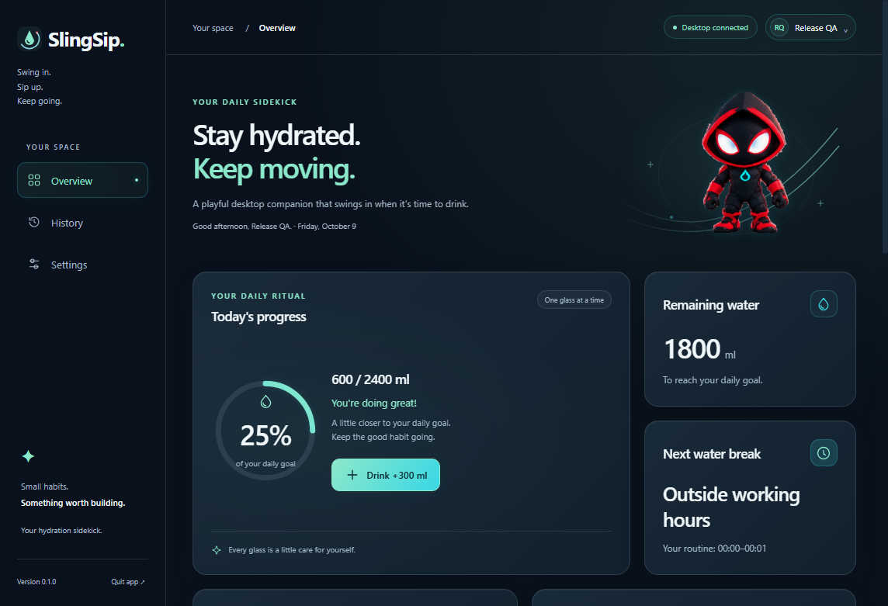
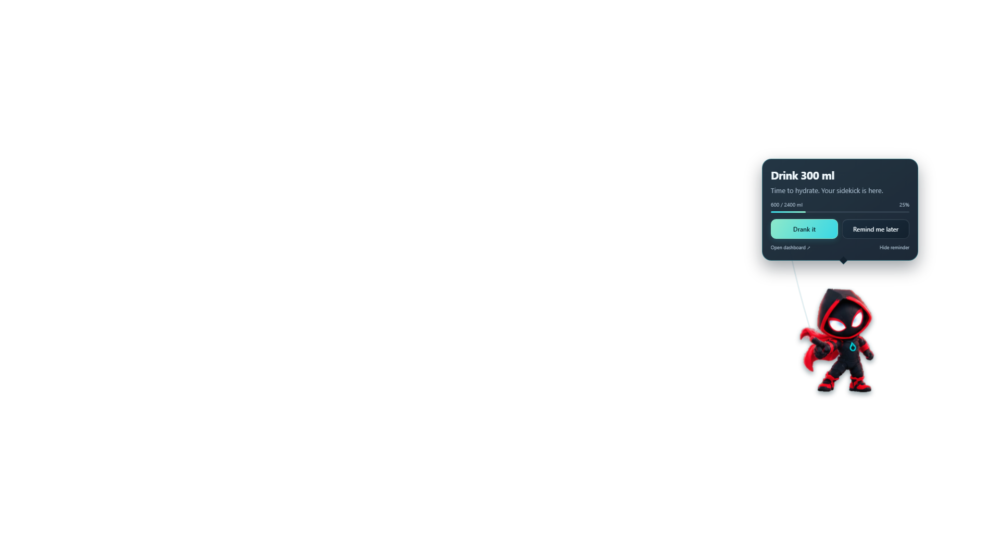
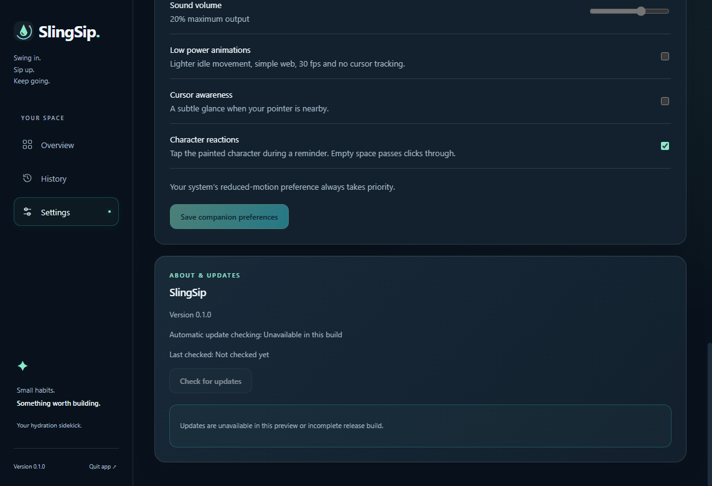

9 October 2026. Original unsigned 0.1.0 package with production behavior, an externally isolated profile and seeded QA records. The installer was not run. These are local validation captures, not a published V1 release or physical click-through evidence.
Readiness report · Validation record


